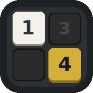

Le casse-tête logique qui fusionne l'unicité du Sudoku, les sommes du Kakuro et les murs cachés du Nonogram.
Téléchargez et installez directement le fichier APK officiel sur votre smartphone ou tablette Android.
Chaque jour, une grille 5x5 commune à tous les joueurs avec rappel illustré des règles.
Lancez le jeu complet et ajoutez-le sur l'écran d'accueil de votre iPhone pour jouer hors-ligne.
Traduction intégrale en français, anglais et espagnol, architecture modulaire (i18n.js) et bannières dorées célébrant le déblocage d'un nouveau mode, thème ou haut-fait.
Ajout du bouton d'aide « ? » avec exemples visuels Correct/Incorrect swipables.